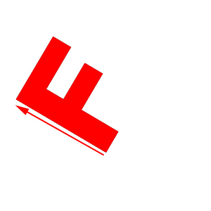
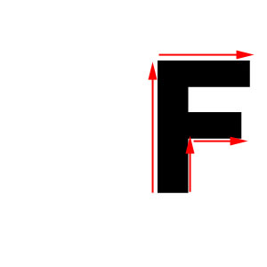

This page is designed to give you a sense of what your images should look like and to help you test your results as you go along. First, recall that the command line is
% assignment1 --in source.bmp --bnMorph dest.bmp line_segment_pair_file 0.5 --out out.bmp where source.bmp is the starting point for your morph, dest.bmp is
the ending point for your morph, 0.5 specifies how far along in the morph you are (in this case, half way) and
out.bmp specifies the file into which the morph will be written. You also need to
input a file that contains your control lines. What is the format of this file? It look like this
3
136 5
186
28 115
43 182 74
186 32
201
52
184 79 198 88
205 55 229
73 202
91 231 118
The first number, "3", tells us the total number of lines
contained in the file. Then, we just start listing source and dest line pairs in
the following way...
<source_line1_start_x> <source_line1_start_y> <source_line1_end_x> <source_line1_end_y> <dest_line1_start_x> <dest_line1_start_y>...
and so on. So all the numbers in the left hand side correspond to control line points in the source image, while all the numbers on the right correspond to control line points in the destination image. We have given you some very simple control line files to get started. Note that the image origin is assumed to be in the upper left-hand corner of the image.
So, here are some test files and results to get you started. The control lines have been added to the images in this web page to help you understand what is going on, but in the files available to you, they exist only in the line files. Note that all these results were created using the default a, b, and p parameters given on the assignment page and the (default) nearest neighbor sampling. Your results should look much nicer if you use bilinear or gaussian sampling.
Running this command line:
% assignment1 --in F.bmp -bnMorph F_translated.bmp f_single_line_translate.txt 0.5 --out out.bmp

with the first two images as source and dest respectively will give you the third image as the result. (That shadow around the F here and below tells you that our control lines didn't match up perfectly.)
Running this command line:
% assignment1 --in F.bmp --bnMorph F_translated_scaled.bmp f_single_line_translate_scale.txt 0.5 --out out.bmp
with the first two images as source and dest respectively will give you the third image as the result.
Running this command line:
% assignment1 --in F.bmp --bnMorph F_rotated.bmp f_single_line_translate_rotate.txt 0.5 --out out.bmp

with the first two images as source and dest respectively will give you the third image as the result.
Running this command line:
% assignment1 --in F.bmp --bnMorph F_scaled_2d.bmp f_multi_line_scale.txt 0.5 --out out.bmp

with the first two images as source and dest respectively will give you the third image as the result. Note that the morph is not angle preserving unless you are lined up with control lines. (This is what is causing the funny behavior at the bottom of the F and on the short edges.)
After you have done all the above work, you may notice that it doesn't look so nice when you are sampling outside of the image. (This is what is causing the black border to get dragged in.) Depending upon the effect you want to create, you can "clamp" the sampling in such a way that instead of taking a black pixel "outside" of the image, you just choose the closest pixel on the image boundary. This corresponds to thinking of your image as a rubber sheet that is firmly attached at the boundaries. If you choose to do this, handle it in the morph function; don't change your sampling function. And be sure to document this in your write-up.